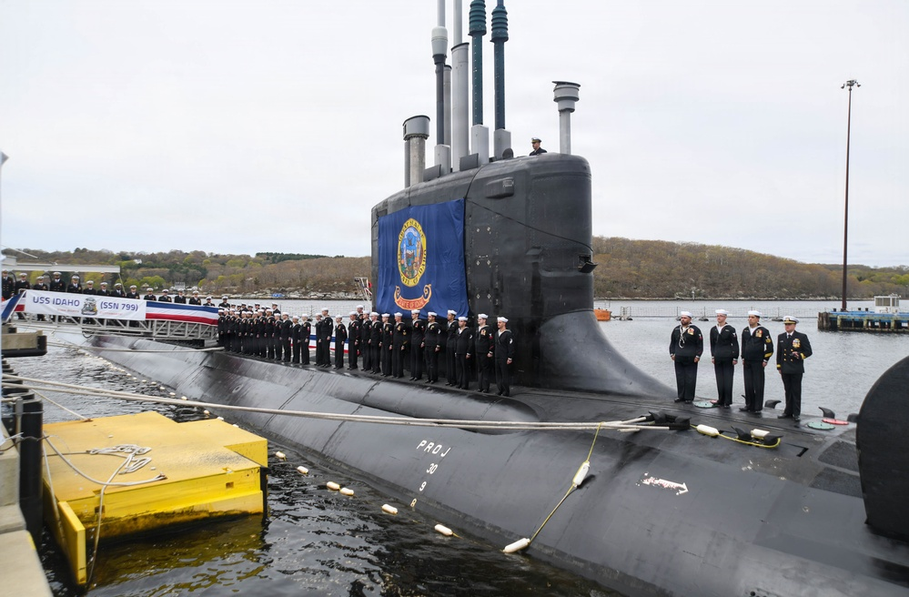

The Navy's next-generation nuclear attack submarine, the SSN(X), will be built from the start as a mothership for undersea drones, with the hull, power and payload designed around launching, recovering, recharging and controlling multiple unmanned underwater vehicles, the Navy's top submarine-requirements officer said this week
Rear Adm. Andrew Miller, director of the Navy's Undersea Warfare Division, told the Naval Submarine League conference in Arlington, Virginia, that the Virginia-class successor will combine Seawolf-class speed and weapons capacity, Virginia-class acoustic stealth and Columbia-class operational availability, according to USNI News. Unlike the Virginia class, which has to retrofit existing torpedo tubes and missile launchers to carry unmanned underwater vehicles, the SSN(X) will have dedicated handling, recharging and command-and-control infrastructure built into a wider hull without sacrificing weapons stowage. The Navy completed its analysis of alternatives in November 2025, got requirements approval in March 2026 and is targeting Milestone A authorization by the end of this year, with the first boat not due for procurement until the early 2040s. Navy officials have tied the push toward autonomous undersea capability to expanding Chinese submarine construction and drone programs.